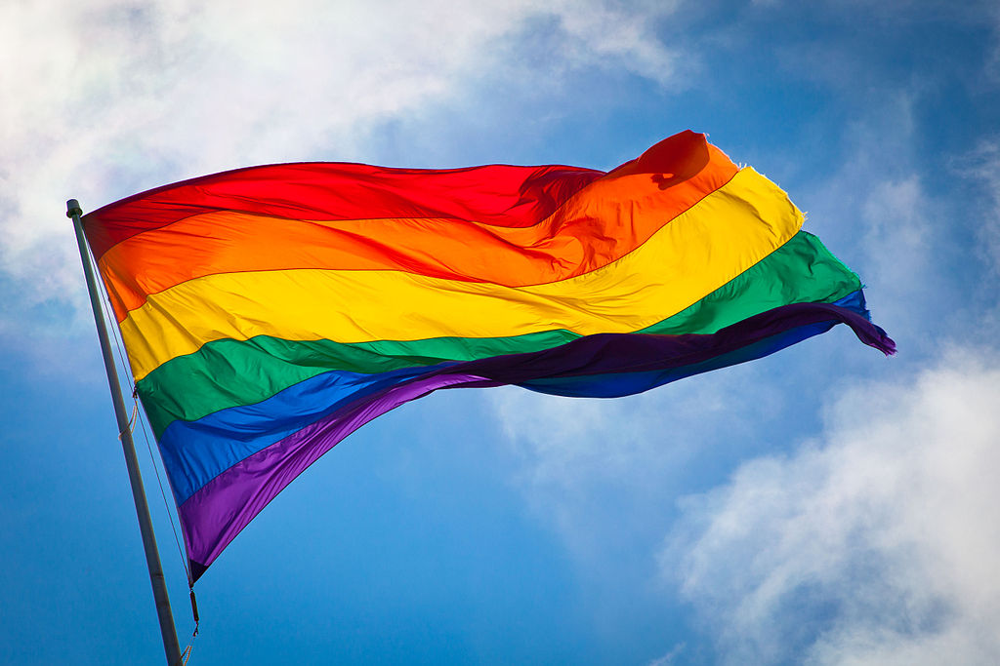
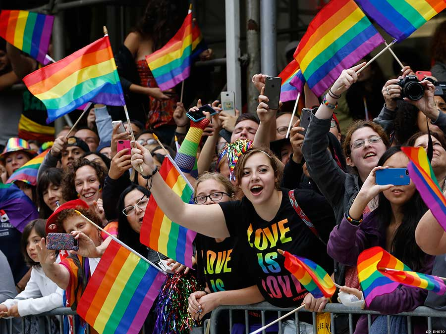
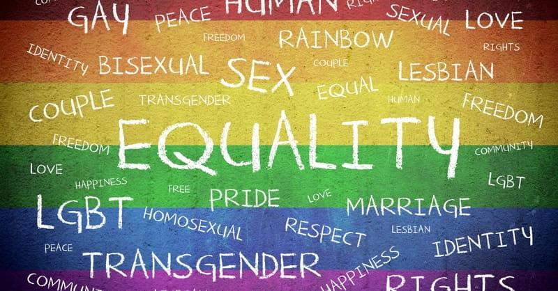

WHAT IS LGBT
LGBT, or GLBT, is an initialism that stands for lesbian, gay, bisexual and transgender and along with heterosexual they describe people’s sexual orientation or gender identity. In use since the 1990s, the term is an adaptation of the initialism LGB, which was used to replace the term gay in reference to the LGBT community beginning in the mid-to-late 1980s.
Lesbian
A lesbian woman is one who is romantically, sexually and/or emotionally attracted to women. Many lesbians prefer to be called lesbian rather than gay.
GayA gay man is one who is romantically, sexually and/or emotionally attracted to men. The word gay can be used to refer generally to lesbian, gay and bisexual people but many women prefer to be called lesbian. Most gay people don’t like to be referred to as homosexual because of the negative historical associations with the word and because the word gay better reflects their identity.
BisexualA bisexual person is someone who is romantically, sexually and/or emotionally attracted to people of both sexes.
TransgenderThis is an umbrella term used to describe people whose gender identity (internal feeling of being male, female or transgender) and/or gender expression, differs from that usually associated with their birth sex. Transgender people identify as a different gender than the sex they were assigned at birth. Many figure this out during their childhood or adolescence (though there are also many who realize their true gender later in life), and then transition to their real gender if the environment allows. Their "real name" and "real gender" are the ones that they prefer.
Not everyone whose appearance or behaviour is gender-atypical will identify as a transgender person. Many transgender people live part-time or full-time in another gender. Transgender people can identify as transsexual, transvestite or another gender identity.
WHAT IS “LGBT+”
LGBT+ (uncountable) Initialism of Lesbian, Gay, Bisexual, Transgender/Transsexual plus. The "plus" is inclusive of other groups, such as asexual, intersex, queer, questioning, etc. The following are groups involved.
AndrogyneA person who is multiple genders at the same time, or middle gender.
AsexualA person who experiences little to no sexual attraction. They may still fall in love, however. For example, a panromantic asexual is capable of falling in love with someone of any gender, while a homoromantic asexual only falls in love with people of their gender. There are many sub-categories in this identity, so it all depends on how a person feels about themselves.
AromanticA person that does not feel romantic attraction (but can be sexually attracted to someone if they are not also asexual).
Bi-genderA person who switches between two genders, usually masculine and feminine gender-type behaviour depending on the situation.
GenderfluidA person who flows between two or more gender presentations, sometimes feeling male, sometimes female, sometimes others regardless of their birth gender.
GenderqueerAn umbrella term people use to refer to not cisgender.
IntersexA person whose genitals did not neatly fit into the "male" or "female" category when they were born. An intersex person may be of any gender.
NonbinaryAn umbrella term people use to refer to a person who does not identify as male or female, and may use gender neutral pronouns.
OmnisexualThis is similar to pansexual, but gender plays a factor into their attraction. They acknowledge all genders regarding attraction as opposed to being gender blind, or gender having no impact on attraction.
PansexualSometimes described as 'gender blind', a pansexual is attracted to men, women and everything in between (agender etc.).
NeutroisA person with a neutral gender.
QueerAn umbrella term people use to refer to anything in the LGBTQIA+ acronym.
QuestioningPeople that are of any gender or circumstance that feel they may be one of the above sexualities or gender identities.
WHO IS LGBT FOUNDATION

Established in 1975, LGBT Foundation is a national charity delivering advice, support and information services to lesbian, gay, bisexual and trans (LGBT) communities. It aims to provide a wide range of support services to lesbian, gay, bi and trans people, which are delivered by a team of dedicated staff and volunteers. It also works with healthcare and other professionals to help make public services more accessible and inclusive for LGBT communities.
Working together, LGBT Foundation is changing LGBT lives for the better and securing a safe, equal and healthy future for all lesbian, gay, bi and trans people.
To find more information:
Tel: 0345 3 30 30 30
Email: info@lgbt.foundation.
Web:https://lgbt.foundation/
MORE TERMS YOU NEED TO KNOW
Gender Identity
One’s gender identity refers to whether one feels male, female or transgender (regardless of one’s biological sex). Gender expression refers to outwardly expressing one’s gender identity.
Transsexual people live or wish to live full time as members of the gender other than that assigned at birth. Transsexual people can seek medical interventions, such as hormones and surgery, to make their bodies fit as much as possible with their preferred gender. The process of transitioning from one gender to another is called gender reassignment. Biological females who wish to live and be recognised as men are called female-to-male (FTM) transsexuals or trans men. Biological males who wish to live and be recognised as women are called male-to-female (MTF) transsexuals or trans women.
Transvestite or cross-dressing individuals are thought to comprise the largest transgender sub-group. Cross-dressers sometimes wear clothes considered appropriate to a different gender. They vary in how completely they dress (from one article of clothing to fully cross-dressing) as well as in their motives for doing so. A small number can go on to identify as transsexual.
Gender ReassignmentGender Reassignment also called transitioning, is the process of changing the way someone’s gender is lived publicly and can be a complex process. People who wish to transition often start by expressing their gender identity in situations where they feel safe. They typically work up to living full-time in a different gender, by making gradual changes to their gender expression. Connecting with other transgender people through peer support groups and transgender community organisations is also very helpful for people when they are going through the transition process. Transitioning typically involves changes in clothing and grooming, a name change, change of gender on identity documents, hormonal treatment, and surgery.
Coming OutComing Out is the term used by lesbian, gay, bisexual and transgender (LGBT) people to describe their experience of discovery, self-acceptance, openness and honesty about their LGBT identity and their decision to disclose, i.e. to share this with others when and how they choose.
Sexual OrientationSexual Orientation refers to an enduring pattern of emotional, romantic, and/or sexual attractions to men, women, or both sexes. Sexual orientation also refers to a person’s sense of identity based on those attractions, related behaviours, and membership in a community of others who share those attractions. Three sexual orientations are commonly recognised – heterosexual, homosexual (gay and lesbian) and bisexual.
HomophobiaHomophobia refers to fear of or prejudice and discrimination against lesbian, gay and bisexual people. It is also the dislike of same-sex attraction and love or the hatred of people who have those feelings. The term was first used in the 1970s and is more associated with ignorance, prejudice and stereotyping than with the physiological reactions usually attributed to a ‘phobia’. While homophobic comments or attitudes are often unintentional, they can cause hurt and offence to lesbian, gay and bisexual people.
TransphobiaTransphobia refers to fear of or prejudice and discrimination against people who are transgender or who are perceived to transgress norms of gender, gender identity or gender expression. While transphobic comments or attitudes are often unintentional, they can cause hurt and offence to transgender people.
FOR MORE RESOURCES AND INFORMATION
http://brightonsexualhealth.com/
http://www.mylgbtplus.org/
https://lgbthistorymonth.org.uk/
https://lgbt.ie/what-is-lgbt/